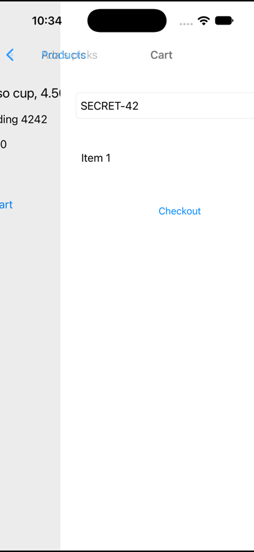
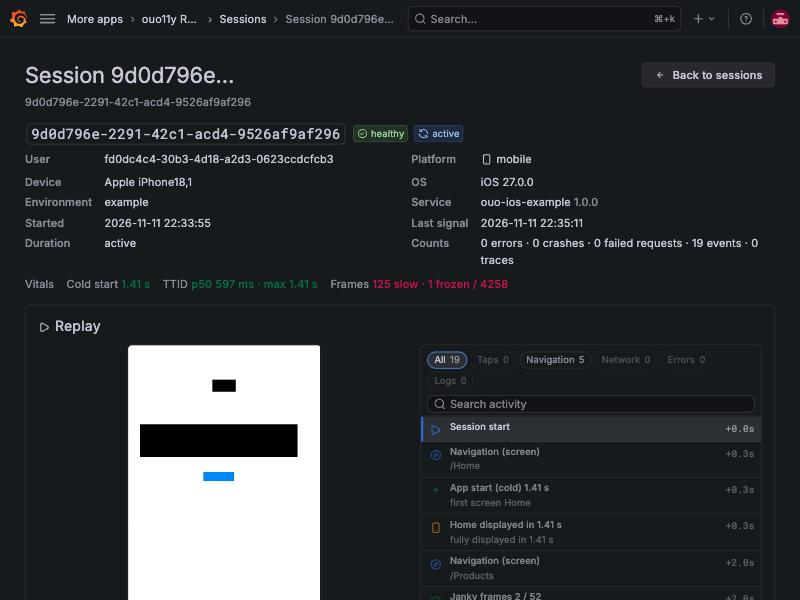
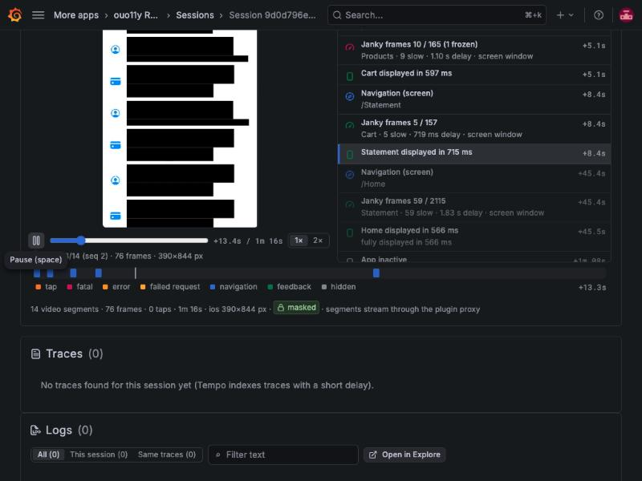
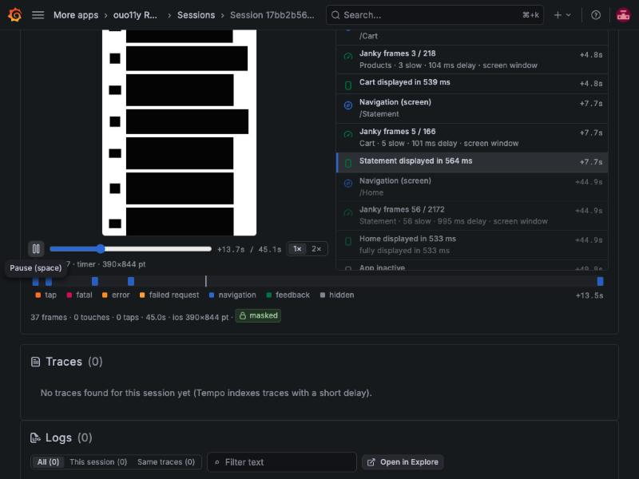
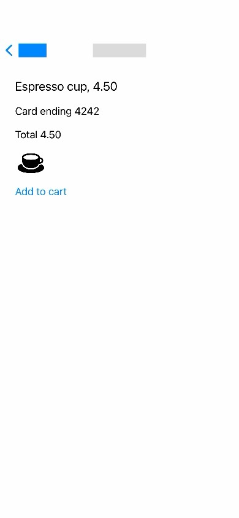
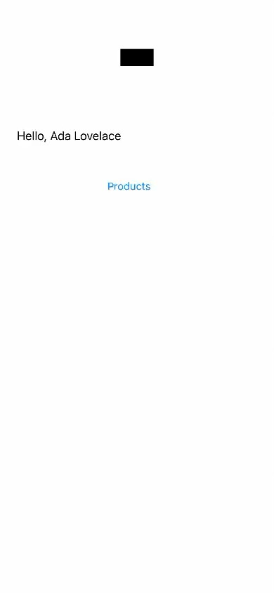
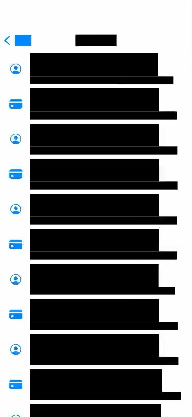
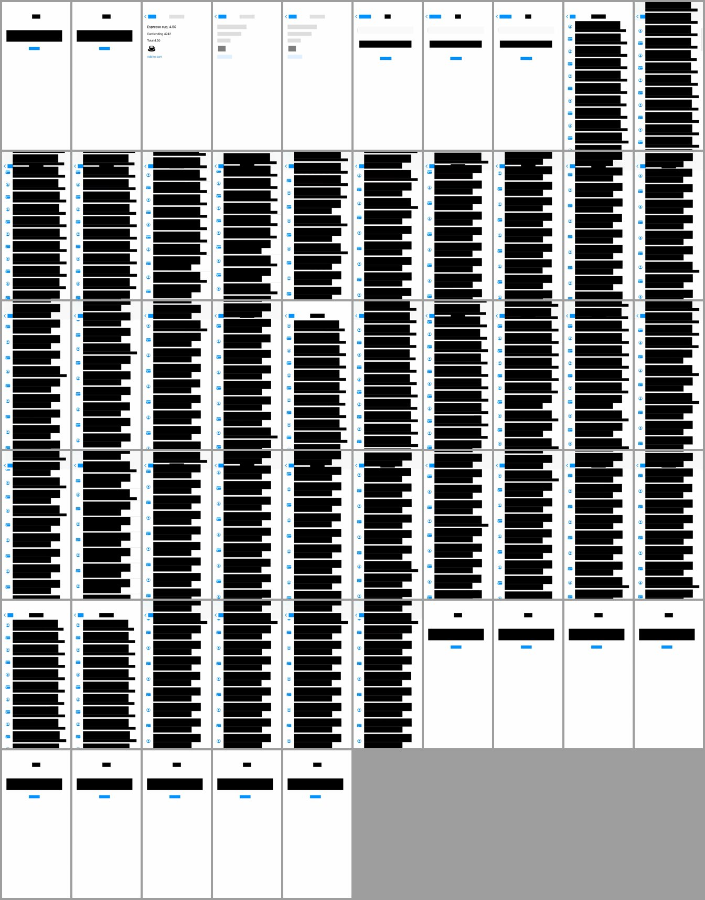
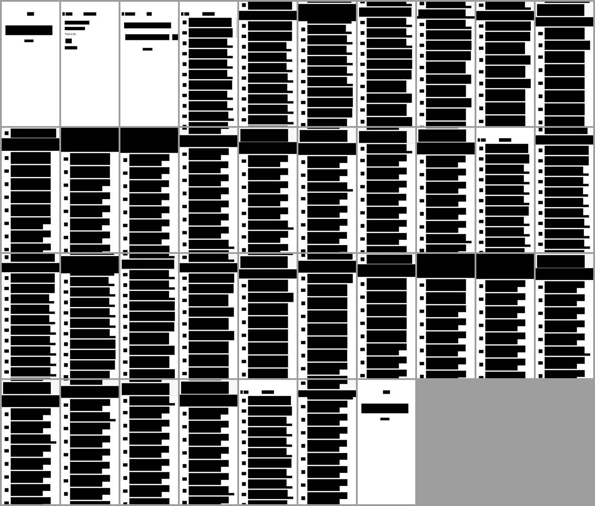

Borrowing Sentry's iOS recorder core
Spike, 2026-11-11, branch claude/sentry-recorder-ios. iOS Simulator (iPhone 17 Pro, iOS 27.0) on an Apple-silicon Mac: simulator numbers, not device numbers. For the proposed ADR-0018 (PR #178). kb entry: project/kb/session-replay/borrowing/sentry-ios-recorder-spike.md.
OuoConfig.replayRecorder = .sentryVideo. Its 5 s H.264 segments go out as kind: "video" chunks with format: "sentry-video" through ouo's uploader and collector, and play in the existing Grafana video player.
On a scroll-heavy journey it sends 40 % fewer bytes and keeps more frames than ouo's frames recorder. It also costs about 1.6 times the main-thread time, and leaked readable text in one frame in 2 of 5 runs, at a screen transition. ouo's recorder, which fails closed, leaked none.
1. Demo: simulator to Grafana
The app is examples/ouo-ios with OUO_ACTION=replaydemo (Home, Products, Cart, then an 80-row statement scrolled down, up and flung, then back to Home). It ran against my own env from deploy/envs/ouo-env up sentryrec, built from this branch. The chunk went into the collector's ouoreplay receiver (port 4319), which now accepts video, then the ouoreplay exporter and rum-api, and was played by the plugin. rum-api stored the session as kind: "video": 14 chunks, 76 frames, 164 KB.




kind: "frames", 37 frames), for comparison.2. Measurements
The method follows Step 5 (project/kb/client-sdk-state/overhead.md): fresh install per run, both recorders interleaved and rotated, 5 rounds, median with min and max. The journey is the 50 s replaydemo; the app is backgrounded at 50 s so the open chunk is cut and sent. Everything went to a local sink (measure/sink.py). Host load was 4.5 to 17.7 (1-minute average); the two loaded Sentry runs are not the extremes of any column. The harness and raw numbers are in project/agents/session-replay/measure/ (results.json).
Replay bytes per minute
Main-thread ms per minute of recording
Main-thread time per capture, measured by each recorder itself and exposed as OuoReplay.captureStats. Sentry: redaction plus render, its own SentryViewPhotographerScreenshotMetadata.mainThreadDuration. Frames: the view walk, mask plan and render, including walks that took no frame. Mask drawing, scaling, encoding and upload run off the main thread in both and are not counted. Step 5 measured a lighter journey without a scroll list: Sentry 49.5 against ouo 38.8 KiB/min. The numbers here are heavier because the screen changes all the time.
3. Masking
measure/frames.swift rebuilds every frame each recorder sent (mp4 frames at i / frame_rate; JPEG patches drawn over their full image), runs Vision text recognition on each, and writes a contact sheet. Both recorders mask all text and images by default. Any recognised text is a candidate miss, and I looked at each one.

.ouoMask().
UILabel greeting is readable; the nav title is masked.Both leaks sit at a screen transition (a push, a pop), never inside the scroll. The likely mechanism: the redaction pass reads the view tree and the presentation layers on the main thread, then the render runs. Right after a transition, the tree it walked does not yet hold the views that the render draws: SwiftUI had not created its text drawing views, and the label was presumably still in the transition's container. ouo's recorder does not capture while a view controller transition runs, waits a settle time after it, and drops a frame when a masked view moves (ADR-0006 rev 2). That is why it has no such frame. This is my reading of the frames, not a traced root cause; the separate masking-experiment session tests Sentry's masking directly.
Sentry also follows its own rules where ouo's differ. It ignores .ouoUnmask() and the ouo-mask/ouo-unmask identifiers, so "Total 4.50" is masked under Sentry and visible under ouo. It does not mask SF Symbols or bundled images (the row icons stay visible; ouo masks them). It fills masks with the area's average colour rather than black.
During scrolling



4. What was copied, what was cut
| Piece | Where | How |
|---|---|---|
| Hook: run-loop observer, activity guard | SentrySessionReplayRunLoopCaptureScheduler, SentrySessionReplayCaptureGuard | copied |
| Record: photographer, renderers | SentryViewPhotographer, SentryViewRendererV2 and friends | copied |
| Mask: redaction builder, regions, mask renderers | SentryUIRedactBuilder and 8 files, plus the ObjC exception helper | copied (ObjC class given an objc_runtime_name) |
| Pack: frame store, H.264 writer | SentryOnDemandReplay, SentryVideoFrameProcessor, SentryPixelBuffer and friends | copied |
| Seams: log, queues, date, run-loop typealiases | Seams.swift (82 lines), SentryLogC.h | re-implemented |
| Pacing and 5 s segment cut | SentrySessionReplay (958 lines) | adapted into SentryCoreRecorder (358 lines) |
| Hub, replay id, envelope, rrweb events, breadcrumbs, network details, touch swizzling, buffer mode, file manager, crash recovery | SentrySessionReplay, SentrySessionReplayIntegration and others | cut |
| Ship: chunk, touches, seq, uploader | VideoReplayRecorder, VideoChunk; collector ouoreplay accepts video | ouo |
sdk/ios/scripts/sentry-core-sync.sh check proves the copy equals the tag plus three scripted transforms. diff <tag> shows upstream changes. From 9.32.0 to 9.33.0 none of the copied files changed; against 9.30.2, one file differs by 12 lines. The core adds about 236 KiB of code and data per architecture (Release simulator object, before dead-stripping).
5. What this does not show
- Device numbers. The simulator's main thread is the Mac's. Step 5's rule applies: read only differences whose ranges do not overlap. Bytes, frames and main-thread time do not overlap here.
- Whether the transition leak happens on a device, and how often. It needs a frame landing in a short window, so 1 in 2 or 3 sessions is this journey's rate, not a general one.
- CPU and memory off the main thread (the H.264 encode, PNG frames on disk). Step 5 measured Sentry replay at 42.5 MiB peak against ouo's 3.8. The copied core is the same code, so expect the same.
- Crash recovery, navigation mode, feedback frames and the OTLP replay path (sdk-spec section 11) are not built for the new recorder.